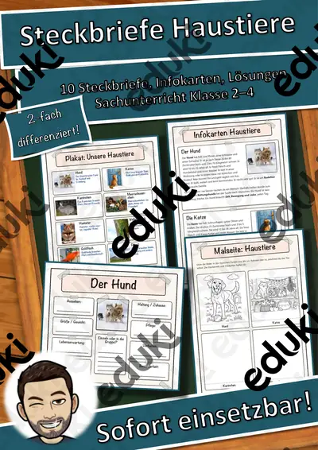
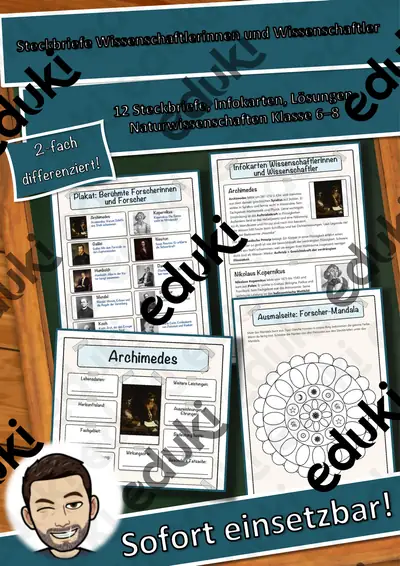
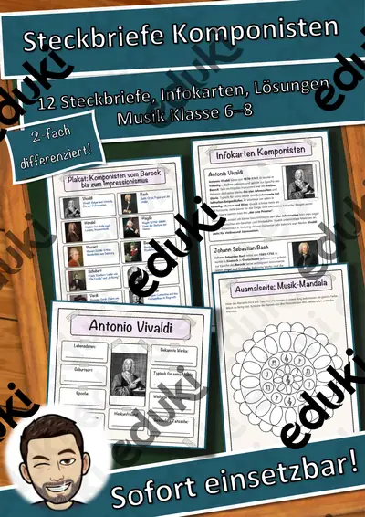
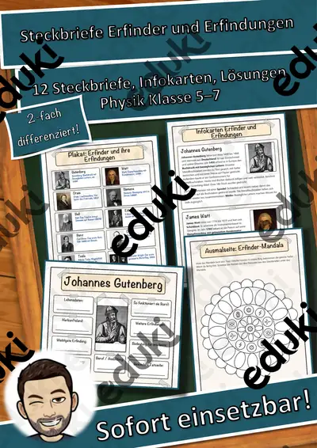

Künstler - Steckbriefe - Materialpaket (33 Künstler)
Das Materialpaket „Künstler - Steckbriefe - Materialpaket (33 Künstler)“ bietet einen umfassenden Überblick über bedeutende Künstler aus verschiedenen Epochen und Kunststilen. Jeder Steckbrief enthält Informationen zu biografischen Daten, künstlerischen Werken, Stilrichtungen und interessanten Fakten über den jeweiligen Künstler. Die übersichtliche Darstellung und anschaulichen Arbeitsblätter ermöglichen es Schülern, sich auf einfache Weise mit den Künstlern vertraut zu machen. Das Paket eignet sich ideal für den Kunstunterricht in verschiedenen Jahrgangsstufen und bietet kreativen Raum für individuelle Lernprojekte oder Referate. Ein wertvolles Material für Lehrkräfte, die Kunstgeschichte lebendig vermitteln möchten.
Ähnliche Materialien

Steckbriefe Haustiere – Materialpaket (10 Haustiere, differenziert, mit Lösungen)

Materialpaket Drogen - Drogenprävention - Steckbriefe Drogen

Materialpaket Steckbriefe Länder Europa #demokratiestärken

Steckbriefe Wissenschaftlerinnen und Wissenschaftler – Materialpaket (12 Forscher, differenziert, mit Lösungen)

Steckbriefe Komponisten – Materialpaket (12 Komponisten vom Barock bis zum Impressionismus, differenziert, mit Lösungen)

Steckbriefe Meerestiere – Materialpaket (10 Tiere aus dem Meer, differenziert, mit Lösungen)

Steckbriefe Erfinder und Erfindungen – Materialpaket (12 Erfinder, differenziert, mit Lösungen)